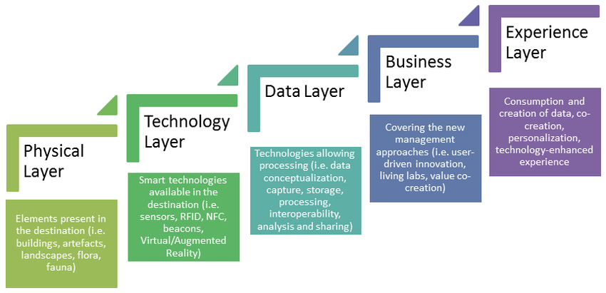
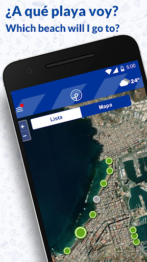

<!DOCTYPE html>
<html lang="en">
<head>
    <meta charset="utf-8" />
    <meta name="viewport" content="width=device-width, initial-scale=1.0, maximum-scale=1.0, user-scalable=no" />

    <title></title>
    <link rel="stylesheet" href="dist/reset.css">
    <link rel="stylesheet" href="dist/reveal.css" />
    <link rel="stylesheet" href="css/slides-extended.css" />
    <link rel="stylesheet" href="dist/theme/black.css" id="theme" />
    <link rel="stylesheet" href="plugin/highlight/zenburn.css" />
    <link rel="stylesheet" href="plugin/customcontrols/style.css">


    <script defer src="dist/fontawesome/all.min.js"></script>

    <script type="text/javascript">
        function pageInIframe() {
            return (window.location !== window.parent.location);
        }

        let forgetPop = true;
        function onPopState(event) {
            if(forgetPop){
                forgetPop = false;
            } else if( pageInIframe()) {
                parent.postMessage(event.target.location.href, "app://obsidian.md");
            }
        }
        window.onpopstate = onPopState;
        window.onmessage = event => {
            if(event.data == "reload"){
                window.document.location.reload();
            }
            forgetPop = true;
        }

        function fitElements() {
            const itemsToFit = document.getElementsByClassName('fitText');
            for (const item in itemsToFit) {
                if (Object.hasOwnProperty.call(itemsToFit, item)) {
                    const element = itemsToFit[item];
                    fitElement(element, 1, 1000);
                    element.classList.remove('fitText');
                }
            }
        }

        function fitElement(element, start, end) {

            let size = (end + start) / 2;
            element.style.fontSize = `${size}px`;

            if (Math.abs(start - end) < 1) {
                while (element.scrollHeight > element.offsetHeight) {
                    size--;
                    element.style.fontSize = `${size}px`;
                }
                return;
            }

            if (element.scrollHeight > element.offsetHeight) {
                fitElement(element, start, size);
            } else {
                fitElement(element, size, end);
            }
        }


        document.onreadystatechange = () => {
            fitElements();
            if (document.readyState === 'complete') {
                if (pageInIframe() && window.location.href.indexOf("?export") != -1){
                    parent.postMessage(event.target.location.href, "app://obsidian.md");
                }
                if (window.location.href.indexOf("print-pdf") != -1){
                    let stateCheck = setInterval(() => {
                        clearInterval(stateCheck);
                        window.print();
                    }, 250);
                }
            }
        };
    </script>
</head>

<body>
    <div class="reveal">
        <div class="slides"><section  data-markdown><script type="text/template"><!-- .slide: class="drop" data-background-image="https://images.unsplash.com/photo-1528837516156-0a7225a43641?q=80&w=1333&auto=format&fit=crop&ixlib=rb-4.0.3&ixid=M3wxMjA3fDB8MHxwaG90by1wYWdlfHx8fGVufDB8fHx8fA%3D%3D" data-background-opacity="0.3" template="" -->
<div class="" style="position: absolute; left: 0px; top: 0px; height: 700px; width: 960px; min-height: 700px; display: flex; flex-direction: column; align-items: center; justify-content: center" absolute="true">

<!-- .slide: class="center" -->
# From Saga to Spreadsheets
Iceland's voyage into Smart Tourism

A presentation of the Smart Tourism Ecosystem for Ferðamalastsofa


=> <a href="#/15">Access the resourcesof this presentation</a> <br>
=> Questions, remarks, contact me :<br>
samuel.kohler@gmail.com
</div></script></section><section  data-markdown><script type="text/template"><!-- .slide: class="drop" template="" -->
<div class="" style="position: absolute; left: 0px; top: 0px; height: 700px; width: 960px; min-height: 700px; display: flex; flex-direction: column; align-items: center; justify-content: center" absolute="true">

# Introduction

Tourism has changed drastically over the last ten years

But so has technology

Notes:
The average tourist is using more and more internet, the rise of the indidivual traveler, and iceland has seen this change from half a million visitors to two millions.

thechnology has changed also, from paper guide and tickets to the widerspread digitalisation. From booking with an agent, to direct sales and shorter sales channels.
</div></script></section><section ><section data-markdown><script type="text/template"><!-- .slide: class="drop" template="" -->
<div class="" style="position: absolute; left: 0px; top: 0px; height: 700px; width: 960px; min-height: 700px; display: flex; flex-direction: column; align-items: center; justify-content: center" absolute="true">

<h2 class="r-fit-text">What is Smart Tourism?</h2>

## The journey begins
</div></script></section><section data-markdown><script type="text/template"><!-- .slide: class="drop" template="" -->
<div class="" style="position: absolute; left: 0px; top: 0px; height: 700px; width: 960px; min-height: 700px; display: flex; flex-direction: column; align-items: center; justify-content: center" absolute="true">

### It starts with a destination
Smart Tourism as an evolution of smart cities.

Smart cities evolved as a response to the challenges brought by globalisation, population growth and the rise in data technology.

notes:
Smart tourism represents a convergence of information, communication technologies
and tourism and transforms data into onsite experiences and business value
propositions

The concept of smart tourism is based in the broader concept of smart cities, which
emerged as a response to urbanisation challenges through the application of
information and communication technologies (ICT). 

As cities started using technology
to improve resource management and quality of life for residents, the potential for
similar applications in tourism became evident. Smart tourism builds on this concept,
by focusing on improving the visitor experience while simultaneously addressing the
unique challenges faced by tourist destinations. In this context, smart tourism
represents a holistic approach to destination management, by integrating data from
diverse sources to create more efficient, sustainable, and personalised tourist experiences

city, destination not just a place, it is where data is created and generated
</div></script></section><section data-markdown><script type="text/template"><!-- .slide: class="drop" template="" -->
<div class="" style="position: absolute; left: 0px; top: 0px; height: 700px; width: 960px; min-height: 700px; display: flex; flex-direction: column; align-items: center; justify-content: center" absolute="true">

## Smart tourism is...

Smart Tourism cannot be seen as the mere integration of technology into the tourism industry!

Smart Tourism stresses the need to implement a strategy and create value.

notes: 
Talk about smart being being smartness, not about the technology but the connections and the ability to connect the data through technolgoies and analytical processes to create insights, create value and disseminate these amongst shareholders.
</div></script></section><section data-markdown><script type="text/template"><!-- .slide: class="drop" template="" -->
<div class="" style="position: absolute; left: 0px; top: 0px; height: 700px; width: 960px; min-height: 700px; display: flex; flex-direction: column; align-items: center; justify-content: center" absolute="true">

## Smart Tourism is ...

<div class="fragment fade-up"> <h3>A New Mindset</h3> Not just digitisation—a complete reimagining of destination management </div> <div class="fragment fade-up" data-fragment-index="2"> <div style="display: grid; grid-template-columns: 1fr 1fr; gap: 20px;"> <div style="border-right: 2px solid white;"> <h4>E-Tourism</h4> <p>Digital services</p> <p>ICT-focused</p> <p>Task automation</p> </div> <div> <h4>Smart Tourism</h4> <p>Physical-digital fusion</p> <p>IoT integration</p> <p>Experience transformation</p> </div> </div> </div>

<aside class="notes"><p>Emphasise that smart tourism represents a fundamental shift in thinking, not just an upgrade of existing systems. The comparison helps stakeholders understand the transformative nature of the change
 E-tourism is defined as the of digitalising all managerial and business functions
and services of the tourism system value chain. </p>
<p>E-tourism primarily enables the creation of networks for the exchange of information and relationships between businesses and consumers. On the other hand, smart tourism promotes the fusion of digital infrastructures with the physical elements of a destination. </p>
<p>In contrast to e-tourism, which is largely propelled by business interests, the development of smart tourism requires collaboration between the public and private sectors</p>
<p>Using bokun and have ads online does not make you smart</p>
</div></aside></script></section><section data-markdown><script type="text/template"><!-- .slide: class="drop" template="" -->
<div class="" style="position: absolute; left: 0px; top: 0px; height: 700px; width: 960px; min-height: 700px; display: flex; flex-direction: column; align-items: center; justify-content: center" absolute="true">

## Smart Tourism is ....
*Smart tourism represents a holistic approach to destination management and growth. By combining cutting-edge technologies to blend the physical and digital realms, It offers significant benefits in terms of personalisation, efficiency, and sustainability, distinguishing itself from traditional e-tourism.* 

Gretzel, 2015
</div></script></section></section><section ><section data-markdown><script type="text/template"><!-- .slide: class="drop" template="" -->
<div class="" style="position: absolute; left: 0px; top: 0px; height: 700px; width: 960px; min-height: 700px; display: flex; flex-direction: column; align-items: center; justify-content: center" absolute="true">

## Creating the Smart Tourism Ecosystem
</div></script></section><section data-markdown><script type="text/template"><!-- .slide: class="drop" data-transition="slide" template="" -->
<div class="" style="position: absolute; left: 0px; top: 0px; height: 700px; width: 960px; min-height: 700px; display: flex; flex-direction: column; align-items: center; justify-content: center" absolute="true">

### Data for tourism


<div class="r-stack">
    <div class="fragment fade-in-then-out">
        <h3>The purpose of data</h3>
        <p>*Why* are we collecting data?</p>
    </div>
    <div class="fragment fade-in-then-out">
        <h3>The users of data</h3>
        <p>*Who* creates data, who comsumes it?</p>
    </div>
    <div class="fragment fade-in-then-out">
        <h3>The sources of data</h3>
        <p>*What* is available?</p>
    </div>
</div>
</div></script></section><section data-markdown><script type="text/template"><!-- .slide: class="drop" template="" -->
<div class="" style="position: absolute; left: 0px; top: 0px; height: 700px; width: 960px; min-height: 700px; display: flex; flex-direction: column; align-items: center; justify-content: center" absolute="true">

#### Purpose of data or why do we use it


<p class="fragment">=> Enhance tourist interactions</p>
<p class="fragment"> => Improve market analysis and decision-making</p>
<p class="fragment"> => Improve planning or operations</p>
<p class="fragment"> => Enhance Improve destination sustainability and accessibility</p>
<aside class="notes"><p>Enhance:
Utilise data to improve tourism services through personalisation and increased engagement with tourists. Leverage new technologies and analytics to optimise and tailor offers to individual preferences. Address modern tourists&#39; expectations for customised experiences, which are crucial for satisfaction and destination quality perception.</p>
<p>Improve
Enhance strategic planning through advanced data analytics capabilities. Utilise data from both public and private stakeholders to inform business strategies and manage tourism
flows.</p>
<p>improve planning:
Leverage data to forecast tourism patterns, improving efficiency and competitiveness through precise resource allocation. 
Expand tourism data sources to gain insights into visitor flows and preferences, enabling timely adjustments to activities, promotions, and resource deployment.</p>
<p>enance destination sustain:
Improve the relationship between tourism and the  local environment through data-driven management.</p>
<p>Develop targeted services for disadvantaged groups and accessibility and improve accessibility of existing offerings. </p>
<p>Implement smart solutions to enhance overall efficiency of the tourism ecosystem, promoting transparency and inclusivity in local communities</p>
</div></aside></script></section><section data-markdown><script type="text/template"><!-- .slide: class="drop" template="" -->
<div class="" style="position: absolute; left: 0px; top: 0px; height: 700px; width: 960px; min-height: 700px; display: flex; flex-direction: column; align-items: center; justify-content: center" absolute="true">

#### type of data users

As an ecosystem, it blurs the lines of producer and consumer of data. 

Notes:
Even a small guesthouse can produce and consume data. It is not a top down approach but an interconnected one.
</div></script></section><section data-markdown><script type="text/template"><!-- .slide: class="drop" data-auto-animate="true" template="" -->
<div class="" style="position: absolute; left: 0px; top: 0px; height: 700px; width: 960px; min-height: 700px; display: flex; flex-direction: column; align-items: center; justify-content: center" absolute="true">

# Sources of data


<div class="fragment fade-up">
<h3>Public Sector</h3>
Public administrations, Research institutions and  Cities
</div>

<div class="fragment fade-up">
<h3>Tourism Industry</h3>
Rental sites, search engines, hotels, transport, IT and software
</div>

<div class="fragment fade-up">
<h3>External Sources</h3>
Telco, social media, finance
</div>
</div></script></section><section data-markdown><script type="text/template"><!-- .slide: class="drop" template="" -->
<div class="" style="position: absolute; left: 0px; top: 0px; height: 700px; width: 960px; min-height: 700px; display: flex; flex-direction: column; align-items: center; justify-content: center" absolute="true">

### Types of data
<div class="fragment fade-up" data-fragment-index="1">
   <div style="display: grid; grid-template-columns: 1fr 1fr; gap: 20px;">
       <div style="border-right: 2px solid white;">
           <h4>UGC</h4>
           <p>Reviews, posts, blog articles</p>
           <p>Photos with locations</p>
           <p>Tourist preferences data</p>
       </div>
       <div>
           <h4>UGC Provides</h4>
           <p>Reputation information</p>
           <p>Destination strengths & weaknesses</p>
           <p>Tourist preferences & choices</p>
       </div>
   </div>
</div>

<div class="fragment fade-up" data-fragment-index="2">
   <div style="display: grid; grid-template-columns: 1fr 1fr; gap: 20px;">
       <div style="border-right: 2px solid white;">
           <h4>Transaction Data</h4>
           <p>Web searches</p>
           <p>Online bookings</p>
           <p>Credit card data</p>
       </div>
       <div>
           <h4>Transaction Data Provides</h4>
           <p>Spending trends</p>
           <p>Markets analysis</p>
           <p>Spending categories</p>
       </div>
   </div>
</div>
notes:
**PERCEPTION DATA**
Reviews - posts - blog articles - surveys

**PHOTOGRAPHIC DATA**
Providing locations - time - tags

**WHAT CAN THEY PROVIDE?**
• Reputation infos
• Strengths & Weaknesses of the destination


**WHAT CAN THEY BE USED FOR?**
• Intercept and predict tourist’s choices and
preferences & identify the strengths that attract
visitors
• Improve interactions and engagement with the
tourist
• Track the destinations’s performance
</div></script></section><section data-markdown><script type="text/template"><!-- .slide: class="drop" template="" -->
<div class="" style="position: absolute; left: 0px; top: 0px; height: 700px; width: 960px; min-height: 700px; display: flex; flex-direction: column; align-items: center; justify-content: center" absolute="true">

### Types of data
<div class="fragment fade-up" data-fragment-index="1">
   <div style="display: grid; grid-template-columns: 1fr 1fr; gap: 20px;">
       <div style="border-right: 2px solid white;">
           <h4>Device Data</h4>
           <p>GPS tracking</p>
           <p>Mobile roaming data</p>
           <p>Smart city sensors</p>
       </div>
       <div>
           <h4>Device Data Provides</h4>
           <p>Tourist behaviours</p>
           <p>Movement patterns</p>
           <p>Popular locations</p>
       </div>
   </div>
</div>

<div class="fragment fade-up" data-fragment-index="2">
   <div style="display: grid; grid-template-columns: 1fr 1fr; gap: 20px;">
       <div style="border-right: 2px solid white;">
           <h4>Private Data Sets</h4>
           <p>Airlines passenger data</p>
           <p>Hotel vacancies</p>
           <p>Restaurant bookings</p>
       </div>
       <div>
           <h4>Private Data Provides</h4>
           <p>Booking patterns</p>
           <p>Occupancy rates</p>
           <p>Market typologies</p>
       </div>
   </div>
</div>

notes:
##### Device data
**Devices for tracking of movements**: GPS data, mobile roaming data, Bluetooth data, RFID data, WIFI data and framework in various apps
**Smart city devices**: data from traffic sensors, air
quality, public transportation, internet access)
**WHAT CAN THEY PROVIDE?**
Information on tourists behaviours & movements
**WHAT CAN THEY BE USED FOR?**
• Develop tourism services increasingly
personalised
• Direct resources on most popular spots
##### Private data sets
Data on the number of passengers held by airlines, data on vacancies of hotels, data on restaurants reservations, events
**WHAT CAN THEY PROVIDE?**
• Searches & Bookings
• Rates & OTA Saturation
• Arrivals & Cancellations
• Markets and traveller typologies
**WHAT CAN THEY BE USED FOR?**
• Forecast demand & tourism flows
• Analyze target markets
</div></script></section><section data-markdown><script type="text/template"><!-- .slide: class="drop" template="" -->
<div class="" style="position: absolute; left: 0px; top: 0px; height: 700px; width: 960px; min-height: 700px; display: flex; flex-direction: column; align-items: center; justify-content: center" absolute="true">

### Types of data
<div class="fragment fade-up" data-fragment-index="1">
   <div style="display: grid; grid-template-columns: 1fr 1fr; gap: 20px;">
       <div style="border-right: 2px solid white;">
           <h4>Official Statistics</h4>
           <p>Tourist flows</p>
           <p>Historical data</p>
           <p>Public datasets</p>
       </div>
       <div>
           <h4>Official Statistics Provide</h4>
           <p>Historical trends</p>
           <p>Tourism flows</p>
           <p>Performance metrics</p>
       </div>
   </div>
</div>
notes:
##### Official Statistics
Datasets published by public authorities
**WHAT CAN THEY PROVIDE**?
• Tourists’ flows
• Historical Data
**WHAT CAN THEY BE USED FOR?**
• Ex-post assessments
• Enhance transparency and accountability
</div></script></section><section data-markdown><script type="text/template"><!-- .slide: class="drop" template="" -->
<div class="" style="position: absolute; left: 0px; top: 0px; height: 700px; width: 960px; min-height: 700px; display: flex; flex-direction: column; align-items: center; justify-content: center" absolute="true">

# The power of integration !

Transform raw data into actionable intelligence

notes:
##### **TOGETHER THEY CAN BE USED TO**
• Obtain valuable data and insights to define marketing strategies and
expand the destinations’ market share
• Conduct market analyses and inform decision-making
• Make real-time decisions
• Improve the efficiency and competitiveness of the tourism industry
• Increase destination’s sustainability and accessibility
</div></script></section><section data-markdown><script type="text/template"><!-- .slide: class="drop" template="" -->
<div class="" style="position: absolute; left: 0px; top: 0px; height: 700px; width: 960px; min-height: 700px; display: flex; flex-direction: column; align-items: center; justify-content: center" absolute="true">

# Smart Tourism Frameworks


<div class="fragment fade-up">
Not reinventing the wheel—building on solid foundations
</div>
</div></script></section><section data-markdown><script type="text/template"><!-- .slide: class="drop" data-auto-animate="true" template="" -->
<div class="" style="position: absolute; left: 0px; top: 0px; height: 700px; width: 960px; min-height: 700px; display: flex; flex-direction: column; align-items: center; justify-content: center" absolute="true">

# The Big Four


<div class="fragment fade-right" data-fragment-index="1">
 European Commission Five Pillars
</div>

<div class="fragment fade-right" data-fragment-index="2">
TOMI Framework
</div>

<div class="fragment fade-right" data-fragment-index="3">
Gretzel's Five Layers
</div>

<div class="fragment fade-right" data-fragment-index="4">
 (SA)6 Framework
</div>

notes:
Not going to speak much about each, but they exist.
</div></script></section><section data-markdown><script type="text/template"><!-- .slide: class="drop" data-auto-animate="true" template="" -->
<div class="" style="position: absolute; left: 0px; top: 0px; height: 700px; width: 960px; min-height: 700px; display: flex; flex-direction: column; align-items: center; justify-content: center" absolute="true">

# Gretzel's Five Layers



</div></script></section><section data-markdown><script type="text/template"><!-- .slide: class="drop" template="" -->
<div class="" style="position: absolute; left: 0px; top: 0px; height: 700px; width: 960px; min-height: 700px; display: flex; flex-direction: column; align-items: center; justify-content: center" absolute="true">

# Beyond Theory


<div class="fragment fade-zoom">
<h3>The Synthesis</h3>
</div>

<div style="display: grid; grid-template-columns: 1fr 1fr; gap: 20px;">
<div class="fragment fade-left">
- Integrated Governance <br>
- Sustainable Development<br>
- Enhanced Mobility<br>
</div>
<div class="fragment fade-right">
- Data-Driven Decisions <br>
- Community Engagement<br>
- Holistic Experience<br>
</div>
</div>

<aside class="notes"><p>Emphasise how these frameworks come together to create practical solutions</p>
</div></aside></script></section></section><section ><section data-markdown><script type="text/template"><!-- .slide: class="drop" data-transition="zoom" template="" -->
<div class="" style="position: absolute; left: 0px; top: 0px; height: 700px; width: 960px; min-height: 700px; display: flex; flex-direction: column; align-items: center; justify-content: center" absolute="true">

# A few examples


How it models in the real world
</div></script></section><section data-markdown><script type="text/template"><!-- .slide: class="drop" template="" -->
<div class="" style="position: absolute; left: 0px; top: 0px; height: 700px; width: 960px; min-height: 700px; display: flex; flex-direction: column; align-items: center; justify-content: center" absolute="true">

### Las Canteras  Beach, Spain

<div style="display: grid; grid-template-columns: 1fr 1fr; gap: 20px;">
<div class="fragment fade-right">
<h3>Smart Infrastructure</h3>
- 6 videometric stations<br>
- Real-time sensor network<br>
- Advanced AI algorithms<br>
- Photovoltaic powered<br>
</div>

<div class="fragment fade-left">
<h3>LPA Beach App</h3>
- Live occupancy data<br>
- Weather conditions<br>
- Safety alerts<br>
- Public services info<br>
</div>
</div>

<div class="fragment fade-up" style="margin-top: 2em;">
<h3>🎯 Key Outcomes</h3>
- Data-driven decisions <br>
- Enhanced safety<br>
- Better user experience<br>
- Sustainable management<br>
</div>

<aside class="notes"><p>Perfect example of integrating physical infrastructure, data analytics, and user experience in a smart tourism solution
The application shows, among other data, the most recent images of each sector of the beaches, the tide forecast and the state of the currents and risk areas for bathers, as well as the available sand surface according to the high and low tide. Also, the weather forecast for the current and the next day and the forecast of occupancy of bathers in each sector of the beaches for a subsequent period of two hours.</p>
</div></aside></script></section><section data-markdown><script type="text/template"><!-- .slide: class="drop" template="" -->
<div class="" style="position: absolute; left: 0px; top: 0px; height: 700px; width: 960px; min-height: 700px; display: flex; flex-direction: column; align-items: center; justify-content: center" absolute="true">


</div></script></section><section data-markdown><script type="text/template"><!-- .slide: class="drop" template="" -->
<div class="" style="position: absolute; left: 0px; top: 0px; height: 700px; width: 960px; min-height: 700px; display: flex; flex-direction: column; align-items: center; justify-content: center" absolute="true">

#### Genoa City pass, Italy

<div style="display: grid; grid-template-columns: 1fr 1fr; gap: 20px;">
<div class="fragment fade-right">
<h3>Smart Infrastructure</h3>
- QR codes <br>
- Visit Genoa app<br>
- Augmented reality experience<br>
- Photovoltaic powered<br>
</div>

<div class="fragment fade-left">
<h3>Data captured everywhere !</h3>
- Before arrival !<br>
- Where visitors go<br>
- Distribute the flows<br>
<br>
</div>
</div>
</div></script></section><section data-markdown><script type="text/template"><!-- .slide: class="drop" template="" -->
<div class="" style="position: absolute; left: 0px; top: 0px; height: 700px; width: 960px; min-height: 700px; display: flex; flex-direction: column; align-items: center; justify-content: center" absolute="true">

#### Smart Parkings, Spain, Greece

Helping visitors and locals finding parking spots through app.

https://www.smassa.eu/
https://www.parkinathens.gr/
</div></script></section><section data-markdown><script type="text/template"><!-- .slide: class="drop" template="" -->
<div class="" style="position: absolute; left: 0px; top: 0px; height: 700px; width: 960px; min-height: 700px; display: flex; flex-direction: column; align-items: center; justify-content: center" absolute="true">

### Venice Smart Control Room

<div style="display: grid; grid-template-columns: 1fr 1fr; gap: 20px;">
<div class="fragment fade-right">
<h3>Data Sources</h3>
- 500+ CCTV cameras<br>
- Mobile phone tracking<br>
- Public transport sensors<br>
- Smart bollards<br>
- Water traffic monitors<br>
</div>

<div class="fragment fade-left">
<h3>Real-Time Insights</h3>
- Tourist flow patterns<br>
- Crowd density maps<br>
- Transport capacity<br>
- Resident/Tourist ratio<br>
- Predictive analytics<br>
</div>
</div>

<div class="fragment fade-up" style="margin-top: 2em;">
<div style="display: grid; grid-template-columns: 1fr 1fr; gap: 20px;">
<div>
<h3>🎯 Management</h3>
- Dynamic pricing<br>
- Flow control<br>
- Capacity alerts<br>
</div>
<div>
<h3>💡 Benefits</h3>
- Sustainable tourism<br>
- Better experience<br>
- Protected heritage<br>
</div>
</div>
</div>

<aside class="notes"><p>Venice&#39;s Control Room represents one of the most advanced smart tourism management systems, balancing tourism needs with city preservation</p>
</div></aside></script></section><section data-markdown><script type="text/template"><!-- .slide: class="drop" template="" -->
<div class="" style="position: absolute; left: 0px; top: 0px; height: 700px; width: 960px; min-height: 700px; display: flex; flex-direction: column; align-items: center; justify-content: center" absolute="true">


</div></script></section><section data-markdown><script type="text/template"><!-- .slide: class="drop" template="" -->
<div class="" style="position: absolute; left: 0px; top: 0px; height: 700px; width: 960px; min-height: 700px; display: flex; flex-direction: column; align-items: center; justify-content: center" absolute="true">

### Dubrovnik: People Counter

<div class="fragment fade-up">
<h3>Smart Crowd Management System</h3>
</div>
<br>

<div style="display: grid; grid-template-columns: 1fr 1fr; gap: 20px;">
<div class="fragment fade-right">
<h3>Infrastructure</h3>
- Smart cameras at city gates <br>
- Real-time counting system<br>
- Digital information displays<br>
</div>

<div class="fragment fade-left">
<h3>Smart Features</h3>
- Live occupancy tracking <br>
- Predictive analytics<br>
- Congestion alerts<br>
</div>
</div>

<div class="fragment fade-up" style="margin-top: 2em;">
<h3>🎯 Results</h3>
- UNESCO site protection
- Enhanced visitor experience
- Sustainable tourism management
</div>

Note: Dubrovnik's system exemplifies how technology can protect heritage while managing mass tourism
</div>

note:
https://dubrovnik-visitors.hr/
</script></section><section data-markdown><script type="text/template"><!-- .slide: class="drop" template="" -->
<div class="" style="position: absolute; left: 0px; top: 0px; height: 700px; width: 960px; min-height: 700px; display: flex; flex-direction: column; align-items: center; justify-content: center" absolute="true">

### Barcelona, Spain
</div></script></section><section data-markdown><script type="text/template"><!-- .slide: class="drop" template="" -->
<div class="" style="position: absolute; left: 0px; top: 0px; height: 700px; width: 960px; min-height: 700px; display: flex; flex-direction: column; align-items: center; justify-content: center" absolute="true">

# Data-Driven Tourism


<div style="display: grid; grid-template-columns: 1fr 1fr; gap: 20px;">
<div class="fragment fade-right">
<h3>Big Data Analytics</h3>
- Financial services data
- Telecom partnerships
- IoT sensor networks
- Visitor pattern analysis
</div>

<div class="fragment fade-left">
<h3>CityFlows Project</h3>
- 8 RFID sensors at Park Güell
- 1,000 reusable tracking tags
- Real-time crowd monitoring
- Heritage site protection
</div>
</div>

<div class="fragment fade-up" style="margin-top: 2em;">
<h3>🎯 Impact</h3>
- Improved flow management
- Better visitor experience
- Evidence-based decisions
</div>

<aside class="notes"></div></aside></script></section><section data-markdown><script type="text/template"><!-- .slide: class="drop" template="" -->
<div class="" style="position: absolute; left: 0px; top: 0px; height: 700px; width: 960px; min-height: 700px; display: flex; flex-direction: column; align-items: center; justify-content: center" absolute="true">

#### Portugal study
Cross referencing Airbnb, social media and phone data

https://joaopfonseca.github.io/tourism-management/flows/index.html
</div></script></section><section data-markdown><script type="text/template"><!-- .slide: class="drop" template="" -->
<div class="" style="position: absolute; left: 0px; top: 0px; height: 700px; width: 960px; min-height: 700px; display: flex; flex-direction: column; align-items: center; justify-content: center" absolute="true">

### SEGITTUR
##### Spain's Smart Tourism Engine

<div class="fragment fade-up">
<h3>State Company for Tourism Technology Innovation and Management</h3>
</div>
<br>

<div style="display: grid; grid-template-columns: 1fr 1fr; gap: 20px;">
<div class="fragment fade-right">
<h3>Core Functions</h3>
- Innovation promotion<br>
- Technology integration<br>
- Tourism standards<br>
- Destination support<br>
</div>

<div class="fragment fade-left">
<h3>Key Programs</h3>
- Smart Destinations (DTI)<br>
- Tourism Intelligence System<br>
- Digital transformation<br>
- Public-private partnership<br>
</div>
</div>
</div></script></section></section><section  data-markdown><script type="text/template"><!-- .slide: class="drop" template="" -->
<div class="" style="position: absolute; left: 0px; top: 0px; height: 700px; width: 960px; min-height: 700px; display: flex; flex-direction: column; align-items: center; justify-content: center" absolute="true">

# SEGITTUR in Action


<div style="display: grid; grid-template-columns: 1fr 1fr; gap: 20px;">
<div class="fragment fade-right">
<h3># DATAESTUR Platform</h3>
- Tourism intelligence system<br>
- Multi-source data integration<br>
- Real-time analytics<br>
- Destination insights<br>
</div>

<div class="fragment fade-left">
<h3>Smart Destination Program</h3>
- Certification system<br>
- Technical standards<br>
- Implementation support<br>
- Best practices sharing<br>
</div>
</div>

<div class="fragment fade-up" style="margin-top: 2em;">
<h3>🎯 Impact</h3>
- National standard for smart destinations
- Data-driven tourism management
- Technology innovation catalyst
- International reference model

<aside class="notes"><p>SEGITTUR has become a global reference for smart tourism implementation and standardization
<a href="https://www.dataestur.es/en">https://www.dataestur.es/en</a></p>
</div></aside></script></section><section ><section data-markdown><script type="text/template"><!-- .slide: class="drop" template="" -->
<div class="" style="position: absolute; left: 0px; top: 0px; height: 700px; width: 960px; min-height: 700px; display: flex; flex-direction: column; align-items: center; justify-content: center" absolute="true">

# The Current State
## Iceland's Smart Tourism Journey


<div class="fragment fade-up">
From ground truth to actionable insights
</div>
</div></script></section><section data-markdown><script type="text/template"><!-- .slide: class="drop" data-auto-animate="true" template="" -->
<div class="" style="position: absolute; left: 0px; top: 0px; height: 700px; width: 960px; min-height: 700px; display: flex; flex-direction: column; align-items: center; justify-content: center" absolute="true">

# Research Overview


<div style="display: grid; grid-template-columns: 1fr 1fr; gap: 20px;">
<div class="fragment fade-left">
<h3>Scope</h3>
- 10 Industry Leaders <br>
- 5-Month Study<br>
- 60-180 Min Sessions<br>
</div>
<div class="fragment fade-right">
<h3>Participants</h3>
- DMO Directors<br>
- Product Managers<br>
- Government Officials<br>
- Tech Consultants
</div>
</div>
notes:
following a grounded theory
</div></script></section><section data-markdown><script type="text/template"><!-- .slide: class="drop" template="" -->
<div class="" style="position: absolute; left: 0px; top: 0px; height: 700px; width: 960px; min-height: 700px; display: flex; flex-direction: column; align-items: center; justify-content: center" absolute="true">

# Key Findings


<div class="r-stack">
    <div class="fragment fade-in-then-out">
        📊 Data Ecosystem (35%)
    </div>
    <div class="fragment fade-in-then-out">
        🏢 Organisational Readiness (27.5%)
    </div>
    <div class="fragment fade-in-then-out">
        👥 Human Capital (16.25%)
    </div>
    <div class="fragment fade-in-then-out">
        🚧 Implementation Obstacles (13.75%)
    </div>
    <div class="fragment fade-in-then-out">
        🎯 Leadership & Strategy (7.5%)
    </div>
</div>
</div></script></section><section data-markdown><script type="text/template"><!-- .slide: class="drop" template="" -->
<div class="" style="position: absolute; left: 0px; top: 0px; height: 700px; width: 960px; min-height: 700px; display: flex; flex-direction: column; align-items: center; justify-content: center" absolute="true">

# The Data Challenge

<div class="fragment fade-up">
<h3>"We are not very mature in the data work here..."</h3>
<p>*Destination Management* </p>
</div>

<div style="display: grid; grid-template-columns: 1fr 1fr; gap: 20px;">
<div class="fragment fade-left">
- Manual processes <br>
- Broken data pipes<br>
- Inconsistent collection<br>
</div>
<div class="fragment fade-right">
- Quality concerns<br>
- Limited access<br>
- Siloed information<br>
</div>
</div>
</div></script></section><section data-markdown><script type="text/template"><!-- .slide: class="drop" data-transition="slide" template="" -->
<div class="" style="position: absolute; left: 0px; top: 0px; height: 700px; width: 960px; min-height: 700px; display: flex; flex-direction: column; align-items: center; justify-content: center" absolute="true">

# Resource Reality


<div class="fragment fade-zoom">
<h3>"We simply don't have the time. And we also don't have the money..."</h3>
</div>

<div class="fragment fade-up">
Small businesses, big challenges:<br>
- Limited budgets <br>
- Personnel constraints <br>
- Competing priorities<br>
</div>
</div></script></section><section data-markdown><script type="text/template"><!-- .slide: class="drop" data-auto-animate="true" template="" -->
<div class="" style="position: absolute; left: 0px; top: 0px; height: 700px; width: 960px; min-height: 700px; display: flex; flex-direction: column; align-items: center; justify-content: center" absolute="true">

# The Skills Gap


<div class="fragment">
<h3>"Managers are not thinking about [data analytics]..."</h3>
</div>
<p>*IT consultant*</p>

<div style="display: grid; grid-template-columns: 1fr 1fr; gap: 20px;">
<div class="fragment fade-left">
<h4>Current State</h4>
- Limited data literacy <br>
- Basic tech adoption<br>
- Operational focus<br>
</div>
<div class="fragment fade-right">
<h4>Needed Skills</h4>
- Data analysis<br>
- Strategic thinking<br>
- Digital competency<br>
</div>
</div>
</div></script></section><section data-markdown><script type="text/template"><!-- .slide: class="drop" data-transition="zoom" template="" -->
<div class="" style="position: absolute; left: 0px; top: 0px; height: 700px; width: 960px; min-height: 700px; display: flex; flex-direction: column; align-items: center; justify-content: center" absolute="true">

# Leadership Vision


<div class="fragment fade-up">
<h3>"There is no overarching strategy..."</h3>
</div>
<p> Data Consultant<p>

<div class="fragment fade-up">
Missing elements: <br>
- Clear direction<br>
- Strategic planning<br>
- Unified approach<br>
</div>
</div></script></section><section data-markdown><script type="text/template"><!-- .slide: class="drop" template="" -->
<div class="" style="position: absolute; left: 0px; top: 0px; height: 700px; width: 960px; min-height: 700px; display: flex; flex-direction: column; align-items: center; justify-content: center" absolute="true">

# Key Opportunities


<div style="display: grid; grid-template-columns: 1fr 1fr; gap: 20px;">
<div class="fragment fade-left">
<h3>Strengths</h3><br>
- Small, connected market<br>
- Growing awareness<br>
- Adaptable industry<br>
</div>
<div class="fragment fade-right">
<h3>Potential</h3><br>
- Unified data approach<br>
- Skill development<br>
- Strategic leadership<br>
</div>
</div>
</div></script></section><section data-markdown><script type="text/template"><!-- .slide: class="drop" data-transition="slide" template="" -->
<div class="" style="position: absolute; left: 0px; top: 0px; height: 700px; width: 960px; min-height: 700px; display: flex; flex-direction: column; align-items: center; justify-content: center" absolute="true">

# Moving Forward


<div class="r-stack">
    <div class="fragment fade-in-then-out">
        1️⃣ Build Data Foundation
    </div>
    <div class="fragment fade-in-then-out">
        2️⃣ Develop Skills
    </div>
    <div class="fragment fade-in-then-out">
        3️⃣ Foster Collaboration
    </div>
    <div class="fragment fade-in-then-out">
        4️⃣ Strengthen Leadership
    </div>
</div>

<aside class="notes"><p>Emphasise that these challenges present opportunities for leadership in smart tourism</p>
</div></aside></script></section></section><section  data-markdown><script type="text/template"><!-- .slide: class="drop" data-background-gradient="linear-gradient(45deg, #1a2a6c, #b21f1f)" template="" -->
<div class="" style="position: absolute; left: 0px; top: 0px; height: 700px; width: 960px; min-height: 700px; display: flex; flex-direction: column; align-items: center; justify-content: center" absolute="true">

# The Opportunity


<div class="fragment fade-zoom">
Transform challenges into competitive advantage
</div>

<div class="fragment fade-up">
Lead the next wave of smart tourism innovation
</div>

<aside class="notes"><p>End with a call to action, emphasising Iceland&#39;s unique position to become a leader in smart tourism</p>
</div></aside></script></section><section  data-markdown><script type="text/template"><!-- .slide: class="drop" data-background-gradient="linear-gradient(45deg, #1a2a6c, #b21f1f)" template="" -->
<div class="" style="position: absolute; left: 0px; top: 0px; height: 700px; width: 960px; min-height: 700px; display: flex; flex-direction: column; align-items: center; justify-content: center" absolute="true">

# The Path Forward


<div class="fragment fade-up">
From Wild West to Smart Tourism Leader
</div>
</div></script></section><section  data-markdown><script type="text/template"><!-- .slide: class="drop" data-auto-animate="true" template="" -->
<div class="" style="position: absolute; left: 0px; top: 0px; height: 700px; width: 960px; min-height: 700px; display: flex; flex-direction: column; align-items: center; justify-content: center" absolute="true">

# Current Reality Check


<div style="display: grid; grid-template-columns: 1fr 1fr; gap: 20px;">
<div class="fragment fade-left">
<h3>Framework Reality</h3>
- Current models insufficient<br>
- Unique challenges<br>
- Need for adaptation<br>
</div>
<div class="fragment fade-right">
<h3>Iceland Context</h3>
- Byzantine network<br>
- Atom-like structure<br>
- Resource constraints<br>
</div>
</div>
</div></script></section><section  data-markdown><script type="text/template"><!-- .slide: class="drop" data-transition="zoom" template="" -->
<div class="" style="position: absolute; left: 0px; top: 0px; height: 700px; width: 960px; min-height: 700px; display: flex; flex-direction: column; align-items: center; justify-content: center" absolute="true">

# The Action Plan


<div class="r-stack">
    <div class="fragment fade-in-then-out">
        <h2>1. Strengthen Collaboration</h2>
        Break down silos, build bridges
    </div>
    <div class="fragment fade-in-then-out">
        <h2>2. Drive Data Culture</h2>
        Beyond the buzzwords
    </div>
    <div class="fragment fade-in-then-out">
        <h2>3. Establish Single Source</h2>
        Create data foundation
    </div>
    <div class="fragment fade-in-then-out">
        <h2>4. Standardise Formats</h2>
        Common language for all
    </div>
</div>

notes:
</div></script></section><section  data-markdown><script type="text/template"><!-- .slide: class="drop" data-background-gradient="linear-gradient(45deg, #1a2a6c, #b21f1f)" template="" -->
<div class="" style="position: absolute; left: 0px; top: 0px; height: 700px; width: 960px; min-height: 700px; display: flex; flex-direction: column; align-items: center; justify-content: center" absolute="true">

# Next Steps


<div class="fragment fade-up">
From chaos to coordination
</div>

<div class="fragment fade-up">
From fragmentation to integration
</div>

<div class="fragment fade-up">
From Wild West to Smart Tourism Pioneer
</div>

<aside class="notes"><p>End with a strong call to action, emphasising the transformation potential</p>
</div></aside></script></section><section  data-markdown><script type="text/template"><!-- .slide: class="drop" template="" -->
<div class="" style="position: absolute; left: 0px; top: 0px; height: 700px; width: 960px; min-height: 700px; display: flex; flex-direction: column; align-items: center; justify-content: center" absolute="true">

# Smart Tourism
## Data-Driven Future

<div class="fragment fade-up">
<h3>Better Decisions</h3>
From guesswork to evidence
</div>

<div style="display: grid; grid-template-columns: 1fr 1fr 1fr; gap: 20px;" class="fragment fade-up">
<div>
<h3>🌍 Planet</h3>
- Resource optimisation<br>
- Crowd management<br>
- Heritage protection<br>
</div>

<div>
<h3>👥 People</h3>
- Local prosperity<br>
- Cultural preservation<br>
- Community engagement<br>
</div>

<div>
<h3>💰 Profit</h3>
- Targeted marketing
- Enhanced experiences
- Sustainable growth
</div>
</div>

<div class="fragment fade-zoom" style="margin-top: 2em;">
<h2>The Future is Smart</h2>
Data transforms destinations from reactive to proactive

<aside class="notes"><p>End with emphasis on how smart tourism creates a win-win-win situation for environment, community, and economy</p>
</div></aside></script></section><section  data-markdown><script type="text/template"><!-- .slide: class="drop" template="" -->
<div class="" style="position: absolute; left: 0px; top: 0px; height: 700px; width: 960px; min-height: 700px; display: flex; flex-direction: column; align-items: center; justify-content: center" absolute="true">

# Thank you
</div></script></section><section  data-markdown><script type="text/template"><!-- .slide: class="drop" template="" -->
<div class="" style="position: absolute; left: 0px; top: 0px; height: 700px; width: 960px; min-height: 700px; display: flex; flex-direction: column; align-items: center; justify-content: center" absolute="true">

# Questions? Remarks?
</div></script></section><section ><section data-markdown><script type="text/template"><!-- .slide: class="drop" template="" -->
<div class="" style="position: absolute; left: 0px; top: 0px; height: 700px; width: 960px; min-height: 700px; display: flex; flex-direction: column; align-items: center; justify-content: center" absolute="true">

### List of Sources and interesting links 1/2


- <a href="https://github.com/kohlerdigital/kohlerdigital.github.io/blob/c79c4af5a3f437b507ee411204a1b0101bf30012/assets/kohler_thesis_final.pdf">My thesis, From Sagas to Spreadsheet</a>
- <a href="https://link.springer.com/article/10.1007/s12525-015-0196-8">Smart tourism: foundations and developments</a>
- <a href="https://www.researchgate.net/publication/282971523_Smart_destinations_Foundations_analytics_and_applications">Smart destinations: Foundations, analytics, and applications</a>
- <a href="https://link.springer.com/article/10.1007/s12525-015-0196-8">Smart tourism experiences: Conceptualisation, key dimensions and research agenda</a>
</div></script></section><section data-markdown><script type="text/template"><!-- .slide: class="drop" template="" -->
<div class="" style="position: absolute; left: 0px; top: 0px; height: 700px; width: 960px; min-height: 700px; display: flex; flex-direction: column; align-items: center; justify-content: center" absolute="true">

### List of Sources and interesting links 2/2

- <a href="https://www.segittur.es/en/">Segitur Platform</a>
- <a href="https://www.dataestur.es/en/">Dataestur - Spanish Tourism Dashboard</a> 
-  <a href="https://joaopfonseca.github.io/tourism-management/
/">Portuguese Study on Social media, Airbnb and phone data </a>
- <a href="https://www.ferdamalastofa.is/static/files/ferdamalastofa/Frettamyndir/2019/mai/airbnb-in-reykjavik3.pdf">AIRBNB AND THE HOUSING MARKET IN REYKJAVÍK</a>
	- A study made on behalf of Ferðamalastofa in 2019. 
- <a href="https://smart-tourism-capital.ec.europa.eu/index_en">The EU smart tourism initative</a>
</div></script></section></section></div>
    </div>

    <script src="dist/reveal.js"></script>
    <script src="plugin/notes/notes.js"></script>
    <script src="plugin/markdown/markdown.js"></script>
    <script src="plugin/highlight/highlight.js"></script>

    <script src="plugin/zoom/zoom.js"></script>
    <script src="plugin/math/math.js"></script>
    <script src="plugin/mermaid/mermaid.js"></script>
    <script src="plugin/chart/chart.umd.js"></script>
    <script src="plugin/chart/plugin.js"></script>
    <script src="plugin/customcontrols/plugin.js"></script>

    <script>
        function extend() {
            const target = {};
            for (let i = 0; i < arguments.length; i++) {
                const source = arguments[i];
                for (const key in source) {
                    if (source.hasOwnProperty(key)) {
                        target[key] = source[key];
                    }
                }
            }
            return target;
        }

        function isLight(color) {
            let hex = color.replace('#', '');

            // convert #fff => #ffffff
            if (hex.length == 3) {
                hex = `${hex[0]}${hex[0]}${hex[1]}${hex[1]}${hex[2]}${hex[2]}`;
            }

            const c_r = parseInt(hex.substr(0, 2), 16);
            const c_g = parseInt(hex.substr(2, 2), 16);
            const c_b = parseInt(hex.substr(4, 2), 16);
            const brightness = ((c_r * 299) + (c_g * 587) + (c_b * 114)) / 1000;
            return brightness > 155;
        }

        const bgColor = getComputedStyle(document.documentElement).getPropertyValue('--r-background-color').trim();

        if (isLight(bgColor)) {
            document.body.classList.add('has-light-background');
        } else {
            document.body.classList.add('has-dark-background');
        }

        // default options to init reveal.js
        const defaultOptions = {
            controls: true,
            progress: true,
            history: true,
            center: true,
            transition: 'default', // none/fade/slide/convex/concave/zoom
            plugins: [
                RevealMarkdown,
                RevealHighlight,
                RevealZoom,
                RevealNotes,
                RevealMath.MathJax3,
                RevealMermaid,
                RevealChart,
                RevealCustomControls,
            ],
            allottedTime: 120 * 1000,
            mathjax3: {
                mathjax: 'plugin/math/mathjax/tex-mml-chtml.js',
            },
            markdown: {
                gfm: true,
                mangle: true,
                pedantic: false,
                smartLists: false,
                smartypants: false,
            },
            mermaid: {
                theme: isLight ? 'default' : 'dark',
            },
            customcontrols: {
                controls: [
                ]
            },
        };

        if ( pageInIframe() ) {
            defaultOptions.scrollActivationWidth = 5;
        }

        // options from URL query string
        const queryOptions = Reveal().getQueryHash() || {};

        const options = extend(defaultOptions, {"controls":true,"progress":true,"slideNumber":false,"center":true,"transition":"slide","transitionSpeed":"default","width":960,"height":700,"margin":0.04}, queryOptions);
    </script>

    <script>
      Reveal.initialize(options);
    </script>
</body>

<!-- created with Slides Extended -->
</html>
